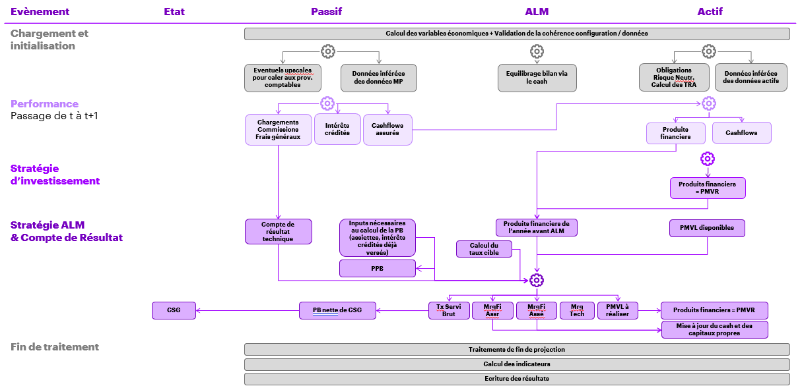

Conception générale
Introduction
Cette partie de la documentation décrit la conception générale du modèle ALM.
L’objectif est de suivre le schéma ci dessous, qui décrit de manière synthétique le fonctionnement du modèle ALM.
Les fonctions décrites ci-dessous sont appelées dans cet ordre par l”orchestrateur des calculs
Initialisation du traitement
L’initialisation du traitement est effectué en différentes sous étapes.
Chargement des données
Chargement pur et simple des inputs du modèle
Validation de la qualité des données
Les actions suivantes sont réalisées à cette étape :
Ajout de champs calculés simples
Tests de cohérence entre les différentes tables et tests unitaires par table
Ecriture en sortie de rapports d’erreurs
Initialisation des chocs Solvabilité 2
Les actions suivantes sont réalisées à cette étape :
Intégration de la notion de choc Solvabilité 2 (axe nommé cdChocS2) pour les tables pertinentes.
Risque neutralisation des actifs obligataires
Calcul des TRA des actifs obligataires
Application des chocs S2 s’appliquent en t=0 et sur les différentes tables d’hypothèses
Initialisation de la projection
L’objectif de cette étape est de préparer les dataframes relatifs à l’état de la société post initialisation pour réutilisation dans la boucle relative au passage du temps. Sont donc ajoutés à ce stade les notions de scenario, de période et d’évènement.
Projection
S’en suit une unique boucle sur l’horizon de projection défini en paramètre et dans laquelle sont appliqués successivement :
la performance : passage du temps sans aucune « management action »
la stratégie d’investissement : modélisation des actions du management en termes de gestion des actifs au sein de chaque canton
la stratégie ALM et l’établissement du compte de résultat
Fin du traitement
La projection terminée, peuvent être calculés les différents indicateurs S2 Ifrs17. Les outputs du modèle souhaités sont par ailleurs écrits à cette étape.
Détails des opérations réalisées
Chargement des données
Les tables chargées durant cette étape peuvent être splitées en plusieurs mais aucunes données ne sont ni calculées ni retraitées à ce stade.
Qualité des données et champs calculés
Cette étape calculatoire permet de réaliser des vérifications sur les données chargées table par table. Ces tests sont de deux types :
la vérification de contraintes sur chaque table unitaires
des tests de cohérence entre les différentes tables
Des champs additionnels inférés des différents inputs sont par ailleurs ajoutés aux différentes tables.
Application des chocs Solvabilité 2
Cette étape calculatoire ajoute l’axe analytique cdChocS2 aux inputs chargés pertinents et applique les chocs S2 s’appliquant en t=0
Initialisation Projection
Projection : Performance
L’évènement performance consiste à simuler le passage du temps sans aucune « management action ».
En résulte au passif :
Le calcul des prestations versées aux assurés
Le calcul des chargements associés
Le calcul des frais généraux dépendant d’assiettes de PM et de prestations
Une fois ces éléments calculés, il est possible de calculer le résultat technique.
En résulte à l’actif :
la mise à jour des valeurs de marché des actifs (sur la base de la nouvelle courbe des taux pour les actifs obligataires ou en prenant en compte les taux de performance pour les actifs indiciels)
la mise à jour des valeurs comptables des différents actifs
la mesure de la fuite économique
Plus spécifiquement pour le cash de chaque canton, la mise à jour de la valeur de marché prend en compte :
le taux de performance du cash
le fait que des prestations ont été versées au passif, ce qui impacte le cash
le fait que les actifs unitaires ont eux-mêmes généré des cashflows alimentant le cash
La valeur comptable du cash mise à jour correspond par ailleurs à sa valeur de marché.
Pour tous les actifs, il convient par ailleurs de calculer les produits financiers générés par la performance afin d’alimenter in fine la stratégie ALM avec cet input.
Projection : Stratégie d’investissement
La stratégie d’investissement vise à modéliser les actions du management en termes de gestion des actifs au sein de chaque canton.
En résulte que :
la stratégie d’investissement se fait à valeur de marché constante
les achats ventes des actifs unitaires impliquent cependant une évolution de la valeur comptable de chaque canton, correspondant à des produits financiers qui ont eux aussi vocation à alimenter la stratégie ALM de fin d’année.
Projection : Stratégie ALM & Compte de résultat
De manière générale, la stratégie ALM constate l’augmentation de valeur comptable à l’actif d’une part et au passif d’autre part, constate les marges de manoeuvre, et permet de rééquilibrer le bilan en déterminant :
La PB versée aux contrats d’assurances (sachant que des IC ont déjà été versés et sont un input)
La marge financière associée aux contrats
La dotation reprise de PPE
La réalisation de PMVL à l’actif (marge de manoeuvre d’augmentation / réduction de la valeur comptable à l’actif)
Pour ce faire, la stratégie ALM dispose en input :
Du stock de PPE
D’un taux cible de participation aux bénéfices (par canton) en input du modèle
Des éléments nécessaires pour calculer la PB en fonction du taux de PB (assiettes de calcul de la PB notamment)
Des produits financiers générés à l’actif pendant l’année (issus de la performance et de la stratégie d’investissement)
Du stock de pmvl disponibles à l’actif (sachant que les pmvl obligataires sont exclues)
Du résultat technique de l’année
Les outputs de la stratégie ALM sont les suivants :
Le taux de PB
Le montant de pmvl à réaliser à l’actif
La dotation / reprise de PPE
Les résultats financiers et techniques de l’année
Ces éléments calculés, il est possible de calculer le résultat brut comme la somme du résultat technique et du résultat financier.
Une fois le résultat brut calculé, celui-ci est extrait du cash du canton pour équilibrer le bilan.
Il est éventuellement possible de calculer l’impôt sur les sociétés et le résultat net mais cela n’a pas d’impact sur la projection. Le taux d’IS en entrée du modèle est donc nul.